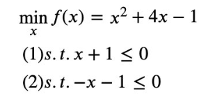

拉格朗日乘子法
拉格朗日乘子法 (Lagrange multipliers)是一种寻找多元函数在一组约束下的极值的方法.
通过引入拉格朗日乘子，可将有 d 个变量与 k 个约束条件的最优化问题转化为具有 d+k 个变量的无约束优化问题求解。
本文希望通过一个直观简单的例子尽力解释拉格朗日乘子法和 KKT (Karush-Kuhn-Tucker) 条件的原理。
以包含一个变量一个约束的简单优化问题为例。
如图所示，我们的目标函数是f(x)=x2+4x−1，讨论两种约束条件 g(x) ：
1) 在满足 x≤−1 约束条件下求目标函数的最小值；
2) 在满足 x≥−1 约束条件 g(x) 下求目标函数的最小值。

我们可以直观的从图中得到，
- 对于约束 1) 使目标值 f(x) 最小的最优解是 x=−2 ；
- 对于约束 2) 使目标值 f(x) 最小的最优解是 x=−1 。
下面我们用拉格朗日乘子来求解这个最优解。
当没有约束的时候，我们可以直接令目标函数的导数为0，求最优值。
可现在有约束，那怎么边考虑约束边求目标函数最优值呢？
- 最直观的办法是把约束放进目标函数里，由于本例中只有一个约束，所以引入一个朗格朗日乘子λ，构造一个新的函数，拉格朗日函数 h(x) ，
- h(x)=f(x)+λg(x)
该拉格朗日函数 h(x) 最优解可能在 g(x)<0 区域中，或者在边界 g(x)=0 上，下面具体分析这两种情况，
- 当 g(x)<0 时，也就是最优解在 g(x)<0 区域中， 对应约束1) x≤−1 的情况。此时约束对求目标函数最小值不起作用，等价于 λ=0 ，直接通过条件 ∇f(x∗)=0 ，得拉格朗日函数 h(x) 最优解 x=−2 。
- 当 g(x)=0 时，也就是最优解在边界 g(x)=0 上，对应约束1) x≥−1 的情况。此时不等式约束转换为等式约束，也就是在 λ>0 、约束起作用的情况下，通过求 ∇f(x∗)+λ∇g(x∗)=0 ，得拉格朗日函数 h(x) 最优解 x=−1 。
所以整合这两种情况，必须满足 λg(x)=0
因此约束 g(x)最小化 f(x) 的优化问题，可通过引入拉格朗日因子转化为在如下约束下，最小化拉格朗日函数 h(x) ，
⎩⎪⎨⎪⎧g(x)≤0λ≥0λg(x)≥0
上述约束条件称为 KKT 条件。
该 KKT 条件可扩展到多个等式约束和不等式约束的优化问题。